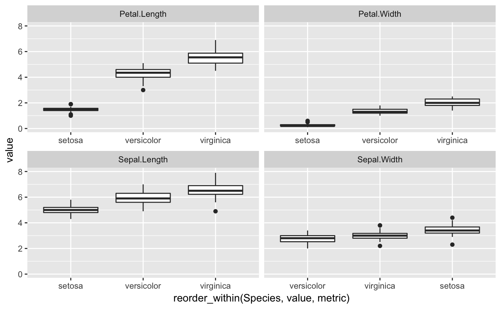

Reorder a column before plotting with faceting, such that the values are
ordered within each facet. This requires two functions: reorder_within
applied to the column, then either scale_x_reordered or
scale_y_reordered added to the plot.
This is implemented as a bit of a hack: it appends ___ and then the facet
at the end of each string.
reorder_within(x, by, within, fun = mean, sep = "___", ...) scale_x_reordered(..., sep = "___") scale_y_reordered(..., sep = "___")
Arguments
| x | Vector to reorder. |
|---|---|
| by | Vector of the same length, to use for reordering. |
| within | Vector of the same length that will later be used for faceting |
| fun | Function to perform within each subset to determine the resulting ordering. By default, mean. |
| sep | Separator to distinguish the two. You may want to set this manually if ___ can exist within one of your labels. |
| ... | In |
Source
"Ordering categories within ggplot2 Facets" by Tyler Rinker: https://trinkerrstuff.wordpress.com/2016/12/23/ordering-categories-within-ggplot2-facets/
Examples
library(tidyr) library(ggplot2) iris_gathered <- gather(iris, metric, value, -Species) # reordering doesn't work within each facet (see Sepal.Width): ggplot(iris_gathered, aes(reorder(Species, value), value)) + geom_boxplot() + facet_wrap(~ metric)# reorder_within and scale_x_reordered work. # (Note that you need to set scales = "free_x" in the facet) ggplot(iris_gathered, aes(reorder_within(Species, value, metric), value)) + geom_boxplot() + scale_x_reordered() + facet_wrap(~ metric, scales = "free_x")